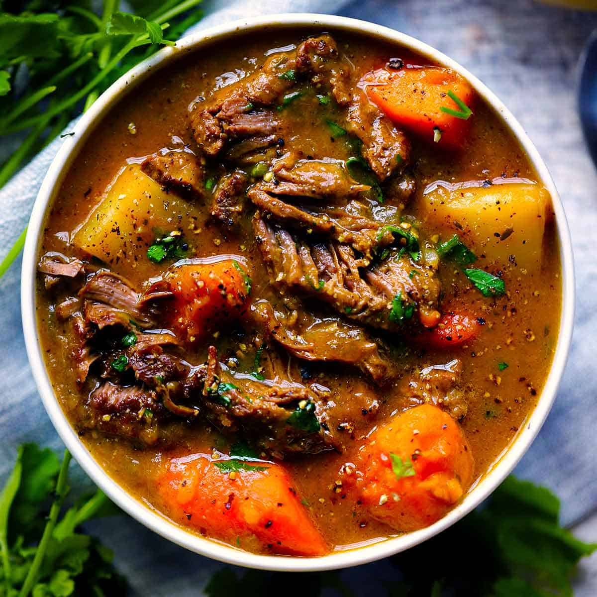

Stew

Description
Everybody loves a hot stew in cold winter-nights! Learn how to do a simple and quick one here
Ingredients
- 2 tablespoons olive oil
- 2 pounds top sirloin steak, diced
- 2 pounds top sirloin steak, diced
- 1 medium sweet onion, diced
- 2 large carrots, peeled and diced
- 2 celery ribs, diced
- 3 cloves garlic, minced
- 8 ounces cremini mushrooms, halved
- 3 tablespoons all-purpose flour
- 2 tablespoons tomato paste
- ½ cup dry red wine
- 2 ½ cups beef stock
- 4 sprigs fresh thyme
- 2 bay leaves
- 1 large russet potato, peeled and cut in 1/2-inch chunks
- 2 tablespoons chopped fresh parsley leaves
Steps
- Heat olive oil in a large stockpot or Dutch oven over medium heat.
Season steak with 1 teaspoon salt and 1/2 teaspoon pepper. Working in batches,
add steak to the stockpot and cook, stirring occasionally, until evenly browned, about 6-8 minutes;
set aside.
- Add onion, carrots and celery. Cook, stirring occasionally, until tender, about 3-4 minutes.
- Add garlic and mushrooms, and cook, stirring occasionally, until tender and browned, about 3-4 minutes.
- Whisk in flour and tomato paste until lightly browned, about 1 minute.
- Stir in wine, scraping any browned bits from the bottom of the stockpot.
- Stir in beef stock, thyme, bay leaves and steak. Bring to a boil;
reduce heat and simmer until beef is very tender, about 30 minutes.
- Stir in potato; simmer until potatoes are just tender and stew has thickened, about 20 minutes.
Remove and discard thyme sprigs and bay leaves. Stir in parsley; season with salt and pepper, to taste.*
Source:
DamnDelicious.net